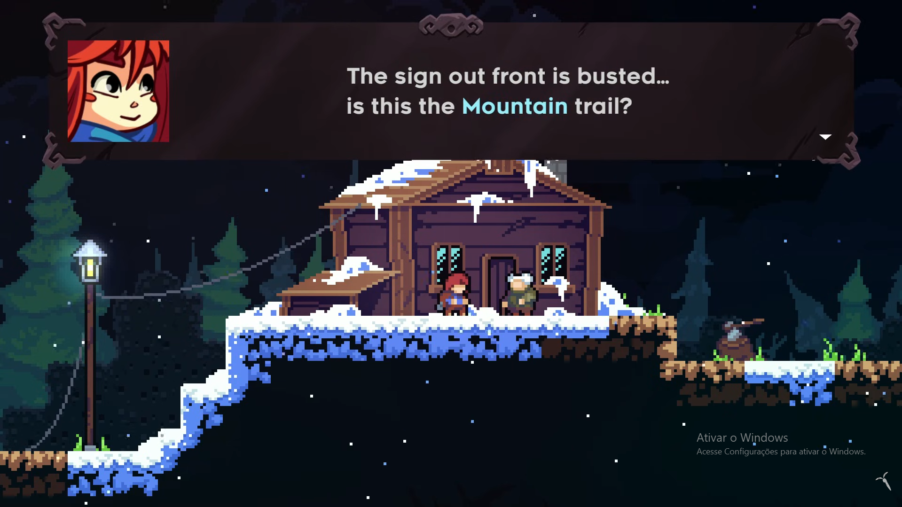
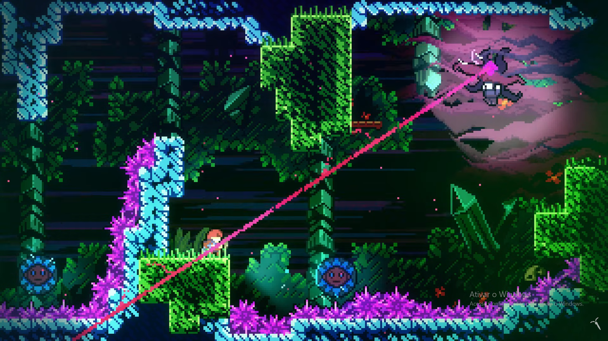
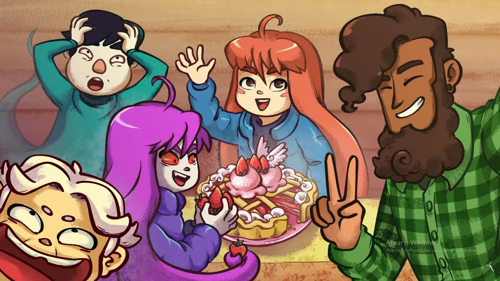

Sobre o jogo:
Celeste é um jogo de plataforma de precisão no qual
Madeline tenta chegar ao topo da Montanha Celeste.
A escalada, porém, acaba se tornando uma jornada muito mais pessoal.
Durante a subida, Madeline encontra uma versão de si mesma, conhecida
como Badeline, que representa seus medos e
inseguranças. A montanha funciona como uma espécie de reflexo de seus
conflitos internos, enquanto Madeline tenta entender e aceitar
diferentes partes de si mesma.
Imagens:


Gameplay e Trailer:
Trilha sonora:
- Nome da faixa: Awake.
- Número da faixa: 4.
- Nome da faixa: Confronting Myself.
- Número da faixa: 16.
- Nome da faixa: Mirror Temple (Mirror Magic Mix).
- Número da faixa: 26.
Informações:
- Lançamento: 2018
- Desenvolvedora: Maddy Makes Games Inc., Extremely OK Games, Ltd.
- Publicadora: Maddy Makes Games Inc.